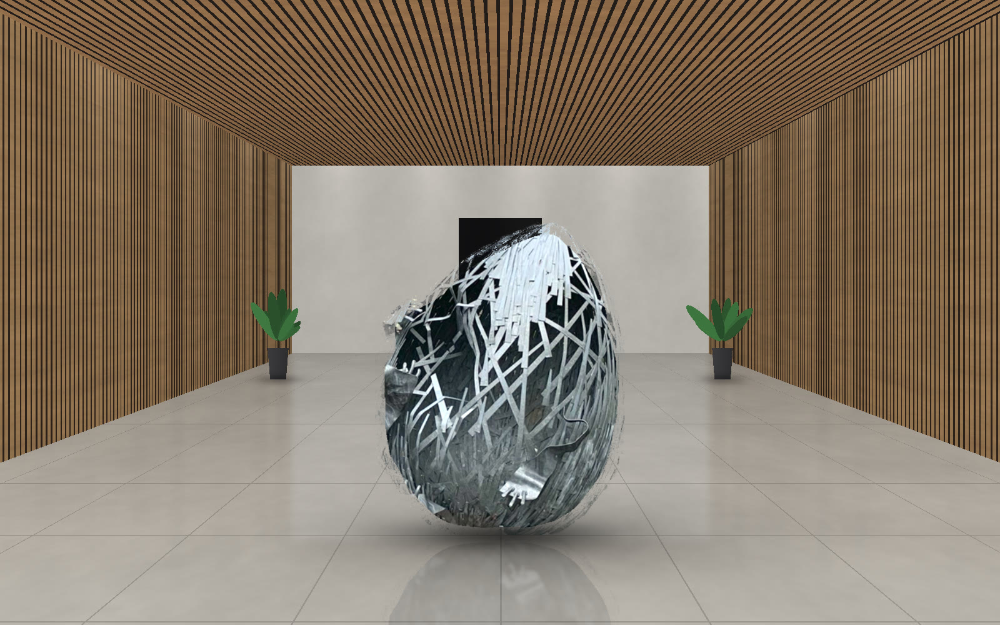
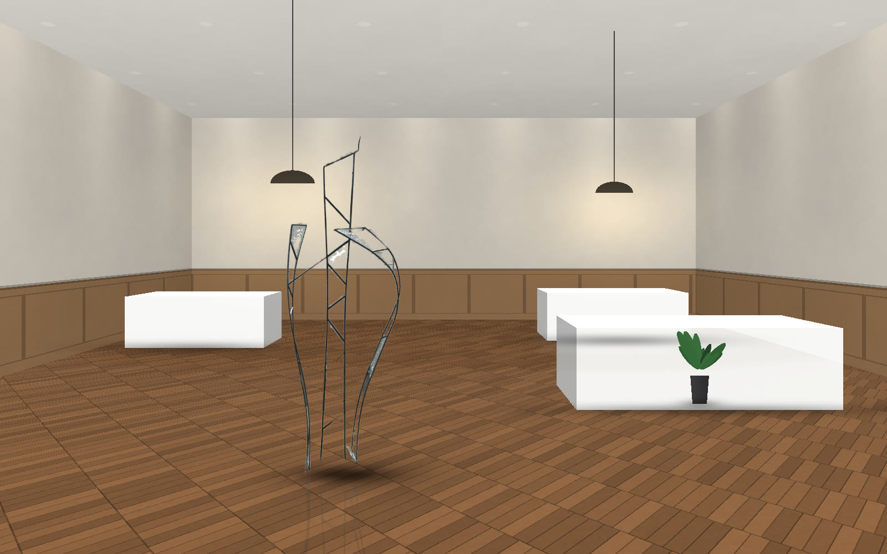
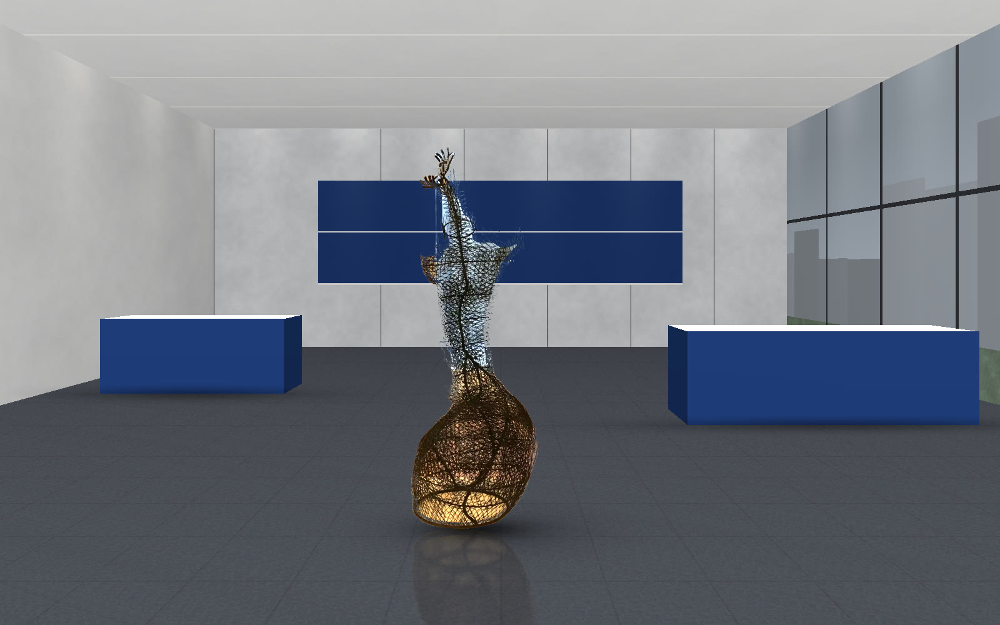
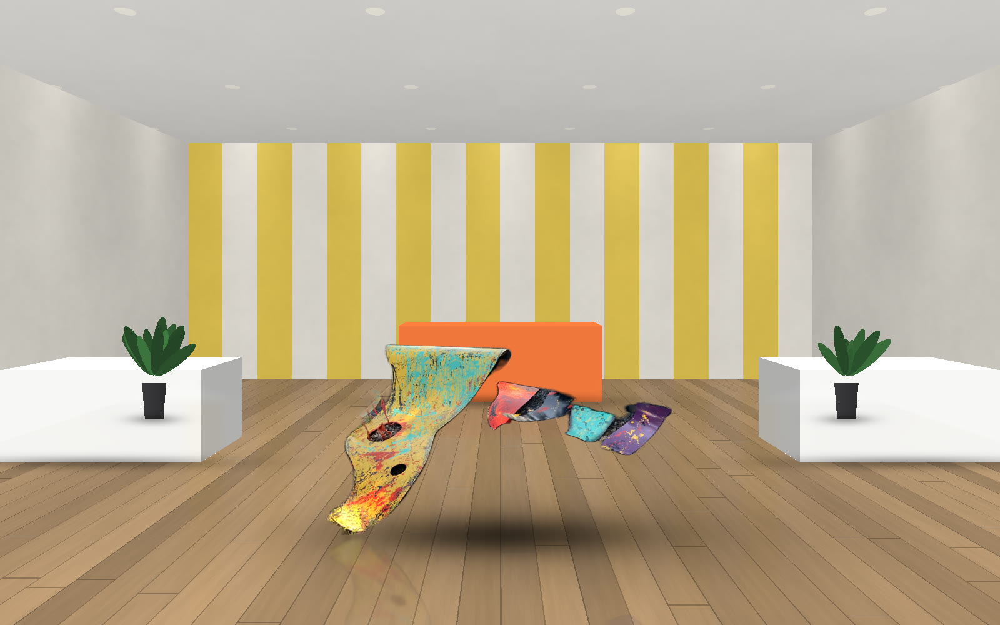
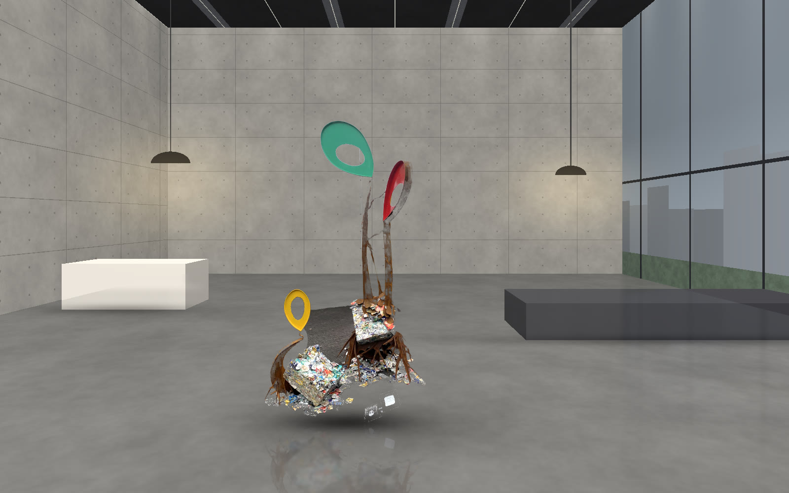

USE 02 ── EVENTS
特別な日の会場に、
記憶に残る一点を。
周年記念式典、表彰式、記念パーティ、採用説明会。会社にとって大切な一日の空間を、鉄の彫刻で演出します。必要な期間だけ借りられるので、イベントにも気軽に取り入れられます。
USE 02 ── EVENTS
周年記念式典、表彰式、記念パーティ、採用説明会。会社にとって大切な一日の空間を、鉄の彫刻で演出します。必要な期間だけ借りられるので、イベントにも気軽に取り入れられます。
イベントの装飾は、終われば片づけられてしまうものがほとんどです。作家が手でつくった鉄の作品は、会場に本物の重みを与え、写真や記憶の中に長く残ります。
1日だけの式典から、数週間の展示会まで。イベントの日程に合わせてレンタルできます。
記念撮影の背景やフォトスポットに。参加者が撮った写真が、イベントの記憶を広げます。
「つなぐ」「守るべきもの」「湧昇の夢」。作品の名前やテーマを、周年のメッセージと重ねられます。
会場の決まりに合わせて、搬入・設置・撤去を作家と当社が担当します。
式典・パーティ・説明会など、場面ごとに会場を描いて作品を置いてみました。画像を押すと大きく表示します。





※ 画像は、作品の写真をもとに合成した参考イメージです（実在の会場・施設ではありません）。
会社の節目や、人が集まる日の空間演出に。
会社の歩みと未来を、作品のテーマに重ねて。式典のあとに本社へ移して飾ることもできます。
壇上の脇やアプローチに置き、式典の格を高めます。
ブースに作品があるだけで、学生や来場者の足が止まり、会社を語るきっかけになります。
新しい建物のための作品を制作し、式典でお披露目することもできます。
ホテルの宴会場、展示会場、自社のホールなど、会場ごとに搬入の時間や方法が決まっています。会場の担当者と調整しながら進めます。
会場の図面や写真、搬入口・エレベーターの大きさ、床の強さをうかがいます。
1日だけのイベントでもご相談ください。前日搬入・当日撤去などにも合わせます。
会場が指定する時間に合わせて、搬入・設置・撤去をします。
参加者がぶつからない位置や、転倒しない置き方を考えます。
ステージの照明やフォトスポットとしての見え方も含めてご提案します。
作品・期間・会場の条件をうかがってお見積りします。
イベントの内容・日程・会場をお知らせください。
図面や写真、搬入の条件を確かめます。
イベントのテーマと会場に合う作品と置き方をご提案します。
会場に置いた姿を事前にお見せします。
会場の指定時間に搬入し、照明を見ながら設置します。
イベントが終われば撤去します。本社への移設もご相談ください。
周年や竣工など、会社の節目に合わせて新しい作品を企画・制作する「リクエストオーダー」も承ります。式典でお披露目し、そのまま会社のシンボルとして残せます。

はい、ご相談ください。会場の搬入・撤去の時間に合わせます。
会場の決まりに合わせて、担当者と調整しながら進めます。
はい。イベント後に本社などへ移して、レンタルを続けることもできます。
はい。フォトスポットとして使っていただけるよう、置き方をご提案します。